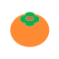
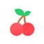

핏타민 님의 추천 영양제
최대오글자님을 위한
핏타민 약사의
건강 솔루션이 도착했어요
간 피로 유형은요
뚜렷한 이유 없이 피로감이 계속 돼요
최근 술이 약해지고 술이 깨는데 시간이 오래걸려요
일주일에 3회 이상 술을 마셔요.
충전을 위해 추천해요!5
최대오글자님!
알코올은 간에서 포도당과 비타민 C를 소모하고 물을 사용해 분해해요. 따라서 물을 지속적으로 섭취해 주고, 당분과 비타민을 섭취한다면 알코올의 배출속도를 높일 수 있어요.

가르시니아
최대 4줄 내용이길면 쩜쩜쩜 과다 섭취한 탄수화물의 지방 전환을 억제해주는 탄수화물 섭취가 많은 한국인들의 다이어트에 적합해요최대세줄까지 들어갈 수 있어요 최대 4줄 내용이길면 쩜쩜쩜 과다 섭취한 탄수화물의 지방 전환을 억제해주는
최대 2줄 소변이 황색으로 변할 수 있지만 인체에 무해해요.소변이 황색으로 변할 수 있지만 인체에 무해해요. 소변이 황색으로 변할 수 있지만 인체에 무해해요.
가르시니아
짧으면 이러케 자동으로 밑 노티가 노출됨
소변이 황색으로 변할 수 있지만 인체에 무해해요.
가르시니아
과다 섭취한 탄수화물의 지방 전환을 억제해주는 탄수화물 섭취가 많은 한국인들의 다이어트에 적합해요최대세줄까지 들어갈 수 있어요
소변이 황색으로 변할 수 있지만 인체에 무해해요.
이때 섭취하면 더 좋아요!
아침 · 점심 식후

술 마시는 당일 · 다음날
아침공복
식후
취침전
도움을 주는 야채와 과일

감

감귤

딸기
바나나

배
블루베리
사과
오렌지

체리
키위
포도
당근

마늘
브로콜리
비트

상추

시금치
양배추
양파
오이

우엉

케일

콩나물
호박
보건복지부, ｢한국인을 위한 식생활지침｣ 2021
약사님의 한 줄 꿀팁
흡연 시 항산화제 섭취가 필요해요.
음주는 각종 비타민과 미네랄을 소모시켜요.
식품 또는 영양제로 비타민D를 보충하세요.
운동은 각종 질병을 예방해요.
채소는 150g씩 하루 2번 이상 섭취해주세요.
과일은 100g씩 하루 2번 이상 섭취해주세요.
성인의 경우 하루 1컵의 우유가 권장돼요.
또 다른 추천 에너지 조합
바싹 바싹 마른눈
눈 피로 유형
뻑뻑하고 시리네...⭐
유리멘탈 개복치
스트레스 민감 유형
내 이름은 고난
시련이죠.
부기온앤온
순환 관리 필요 유형
왜 자꾸 다리가 붓종?
자두 자두 졸림
수면 부족 유형
zzZ
슬기로운 채식생활
채식 지향 유형
지속가능한 삶을 위해!
프로 다시어터
체지방 고민 유형
난 먹을게!
살은 누가 찔래?
K-회식의 희생자
간 피로 유형
제 간도 '처음처럼'
돌릴 수 있을까요?..
걍생러의 미라클
운동체력 부족 유형
준비한 체력이 모두
소진되어 오늘은 이만...
슈가맨
혈당 관리 필요 유형
달콤함이
쏘아 올린 작은 공
먹방 유튜버 꿈나무
위장 트러블 유형
매일 밤 열린
단짠 파티의 최후
열정부자 체력거지
만성 피로
& 면역 관리 유형
꼬리에 꼬리를
무는 ‘피곤함’
바스락 관절맨
관절 보호 유형
시큰 시큰
헝그리뼈 주의보
온라인 줄서기예약
에너지팩을 구매하실 수 있어요
혹시 사전예약을 하셨나요?